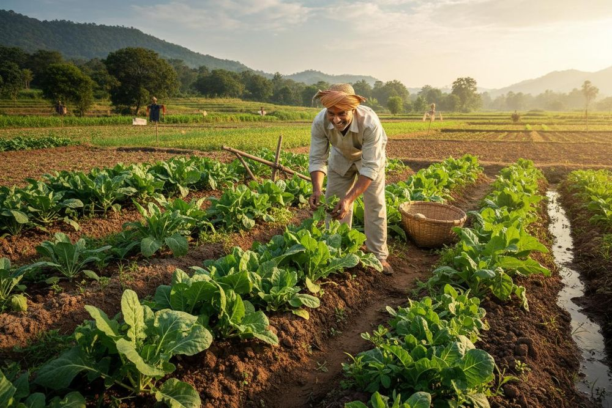
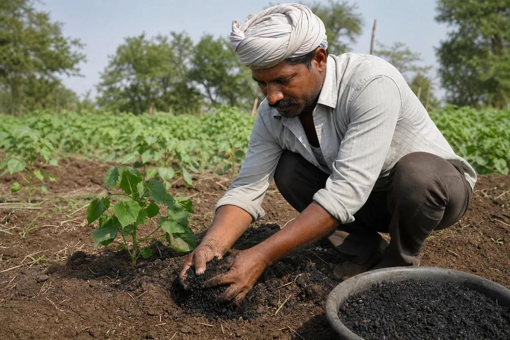
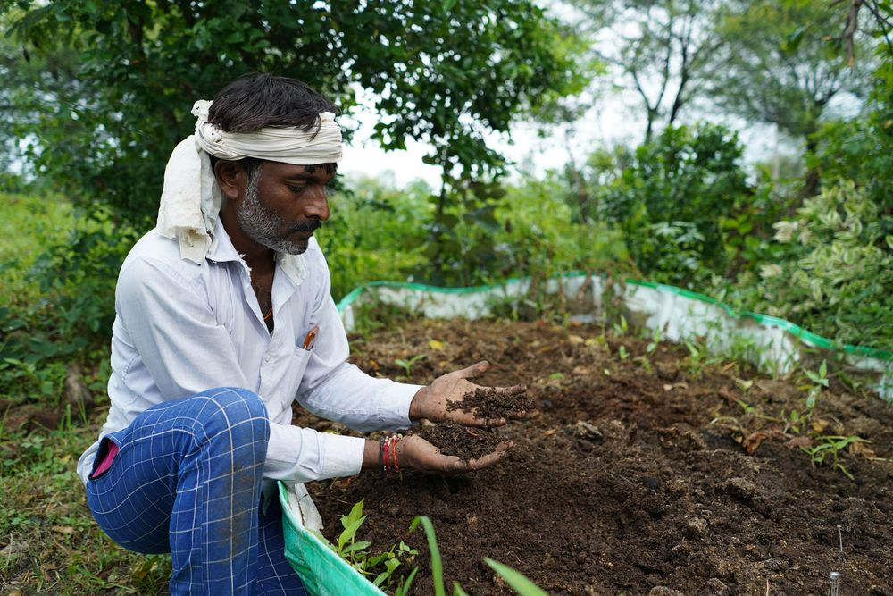
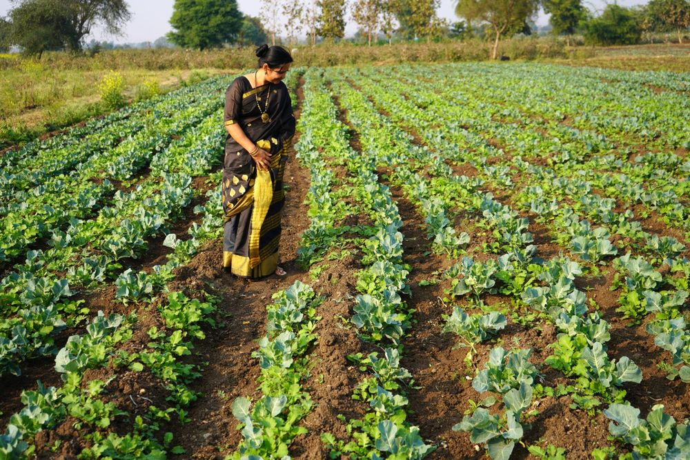
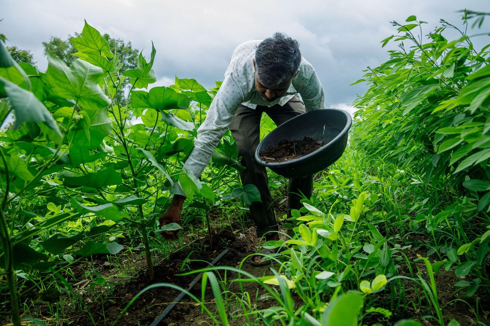
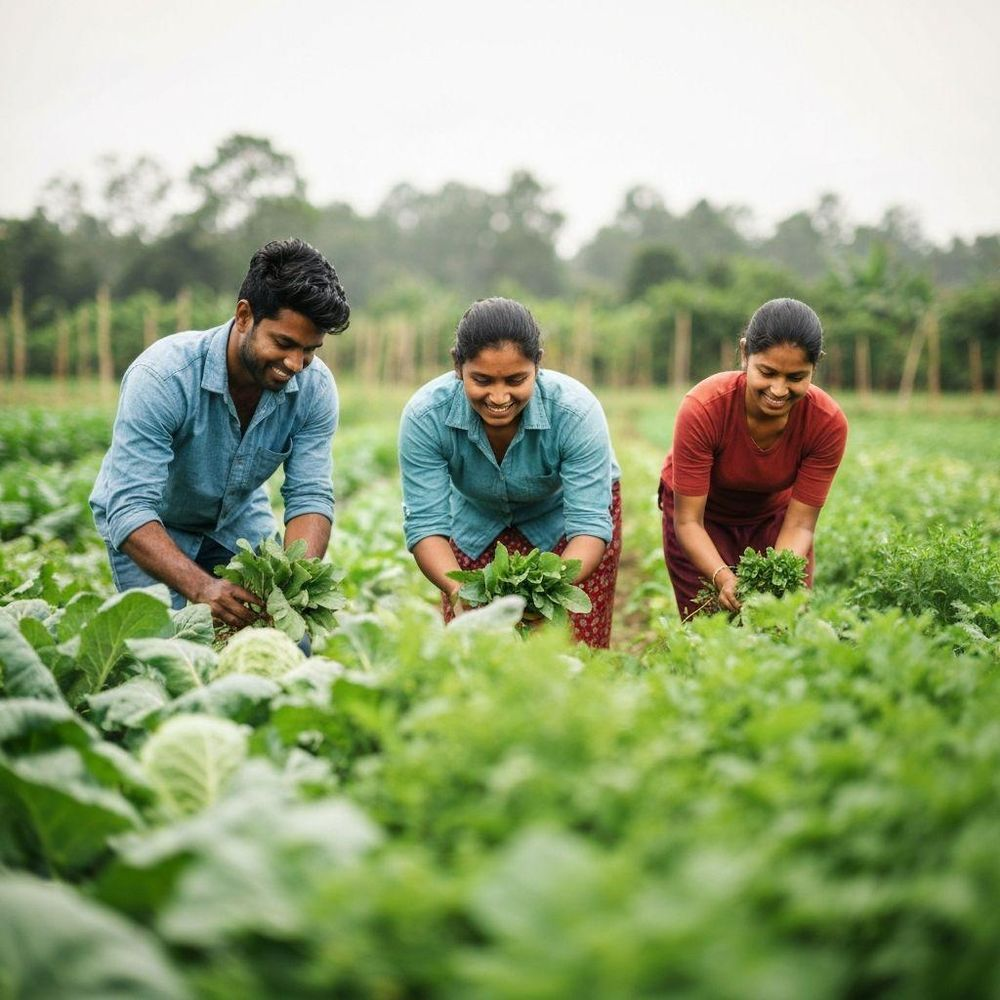

Organic Farming
Healthy Soil • Healthy Crops • Healthy Future
How to Start Government SchemesNatural Farming
Chemical-free approach
Healthy Crops
Better soil health
Sustainable Practices
Long-term farming
Introduction
What is Organic Farming?
Organic farming is a natural and sustainable approach to agriculture that focuses on healthy soil, natural inputs, and environmentally friendly farming practices.
- No harmful chemical fertilizers or pesticides
- Focus on building healthy, living soil
- Safer for farmers, families and consumers

Benefits
Why Choose Organic Farming?
Healthy Soil
Improves soil fertility
Better Environment
Reduces use of harmful inputs
Better Crops
Supports healthy crops
Sustainable Farming
Helps conserve natural resources
Practical Methods
Organic Farming Practices
Organic Manure & Compost
Natural manure and compost for improving soil health.
Vermicomposting
Use earthworm-based compost as a nutrient-rich organic input.
Natural Pest Management
Neem-based and other natural methods to manage pests.
Crop Rotation
Rotate crops to maintain soil fertility and reduce pest problems.
Efficient Irrigation
Use water-saving irrigation methods wherever suitable.
Getting Started
How to Start Organic Farming?
Soil Testing
Check soil health
Choose Crops
Select suitable crops
Organic Inputs
Compost, manure etc.
Monitor Crop
Observe growth & pests
Inputs
Natural Inputs for Organic Farming

Compost
Decomposed farm waste that feeds the soil and improves its structure.

Vermicompost
Earthworm-made compost, rich in nutrients for healthier plants.

Neem-based Solutions
Neem-based sprays to manage common pests the natural way.

Organic Manure
Farmyard manure that builds soil fertility season after season.

Farmer Support
Government Support for Farmers
Many government schemes offer financial help, subsidies and training to farmers, including support for organic and sustainable farming. Find out what is available for you and how to apply.
Explore Government Schemes →Start Your Journey Towards Better Farming
Learn practical farming methods, discover useful resources and make informed decisions for your farm.
Explore Farming Resources → Explore Seed Supply